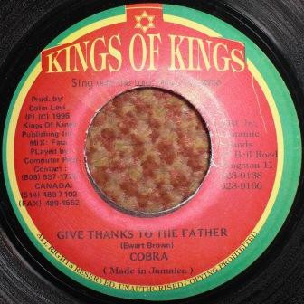
1995 / DISCOGS RELEASE DATE
Give Thanks To The Father
Mad Cobra
Star & wordmark / red label
Inspect the release reference ↗THE VISUAL HISTORY
A visual archive of the marks, banners and campaign artwork that have represented Kings of Kings. Original designs are preserved without redrawing the identity.
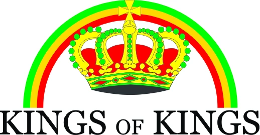
THE CROWN / ROOTS IN COLOUR
The red, gold and green crown appears across the record artwork and concert campaigns in the archive. Its lettering and proportions vary across the original files.
The Toronto Unleashed showcase flyer explicitly dates one use of this mark to May 1, 2016. The record and campaign archive preserves other examples; the logo’s creation date is not established.
See the 2016 showcase ↗THE CREST / INTERNATIONAL
The crown, twin lions and central K form another family of Kings of Kings International marks. The live website preserves both a stacked crest and a horizontal header version.
The website’s media paths place these copies in 2023. That documents their presence in the site archive, rather than proving the year the identity was designed.
ORIGINAL VARIANTS / PRESERVED AS FOUND
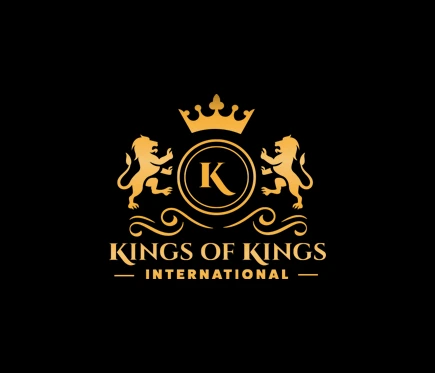
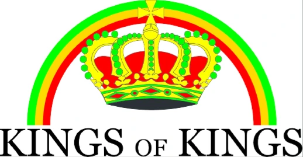
BEYOND THE LOGO / THE BANNERS
The original live-site banner brings the crown together with red, gold and green, a concert audience and an illustrated reggae setting. It is preserved here as historical artwork.
The banner illustrations are historical source artwork. They are not photographs of identified performers. The new homepage uses real artists pictured on original show and record artwork.
Explore the music behind the marks ↗THE RECORD LABEL MARKS / DATED EVIDENCE
The scans below document how the label looked on particular releases. Years are the release years currently recorded by Discogs, not verified logo creation dates. A design may have been used earlier or on later repressings.
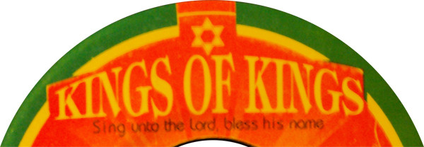
Matches the star-topped wordmark on records catalogued in 1995 and 1996.
Discogs label image reference ↗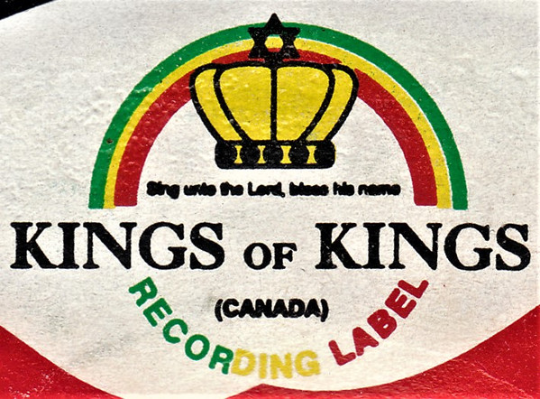
A matching crown family is visible on Crime Stop, catalogued in 1997, and later releases.
Discogs label image reference ↗Original label-gallery artwork. No dated matching pressing established in this sample.
Discogs label image reference ↗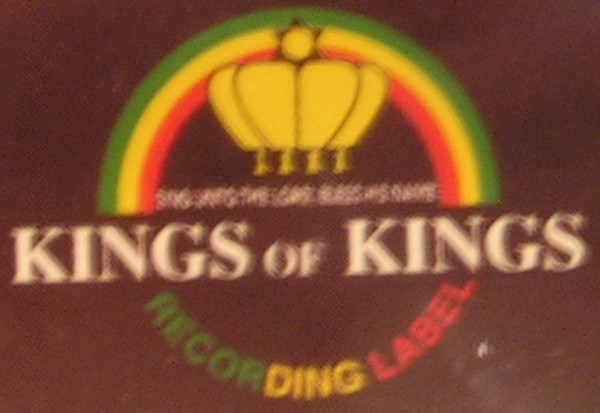
Original label-gallery variant. Its precise period remains unconfirmed.
Discogs label image reference ↗
1995 / DISCOGS RELEASE DATE
Mad Cobra
Star & wordmark / red label
Inspect the release reference ↗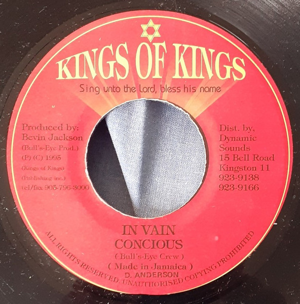
1995 / DISCOGS RELEASE DATE
Bull's Eye Crew
Star & wordmark / red label
Inspect the release reference ↗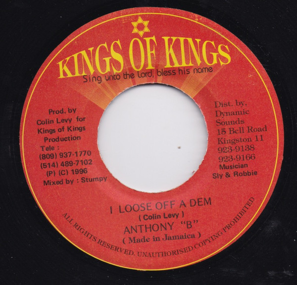
1996 / DISCOGS RELEASE DATE
Anthony B
Star & wordmark / red label
Inspect the release reference ↗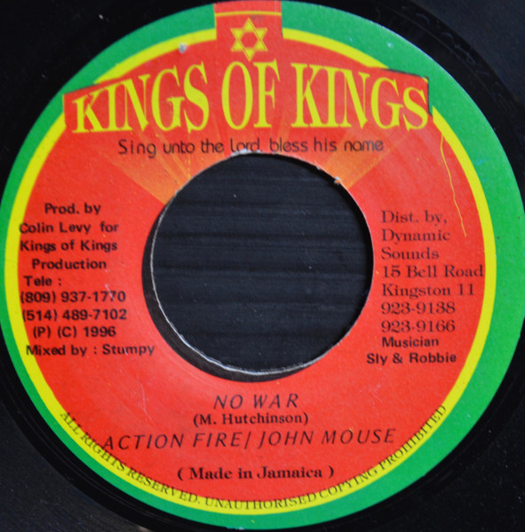
1996 / DISCOGS RELEASE DATE
Action Fire & John Mouse
Star & wordmark / red label
Inspect the release reference ↗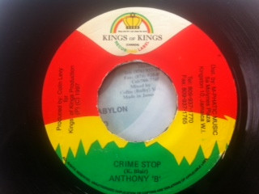
1997 / DISCOGS RELEASE DATE
Anthony B
Crown / red, gold & green label
Inspect the release reference ↗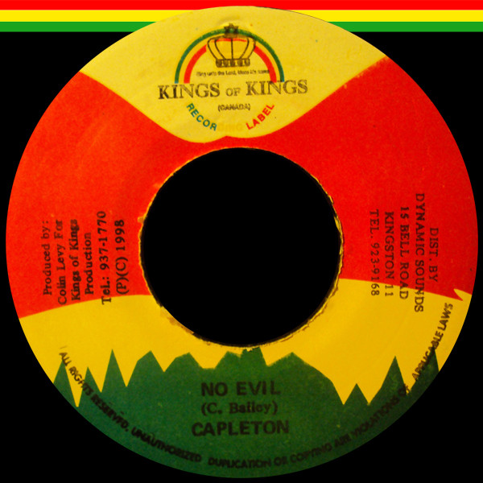
1998 / DISCOGS RELEASE DATE
Capleton
Crown / red, gold & green label
Inspect the release reference ↗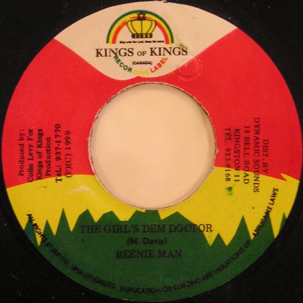
1999 / DISCOGS RELEASE DATE
Beenie Man
Crown / red, gold & green label
Inspect the release reference ↗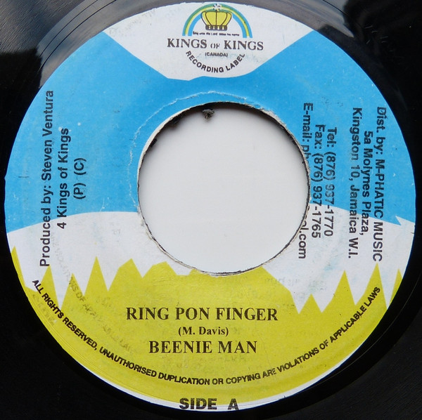
2000 / DISCOGS RELEASE DATE
Beenie Man
Crown / blue & yellow label
Inspect the release reference ↗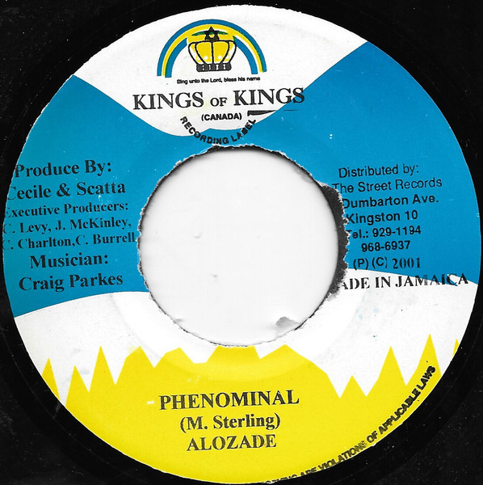
2001 / DISCOGS RELEASE DATE
Alozade
Crown / blue & yellow label
Inspect the release reference ↗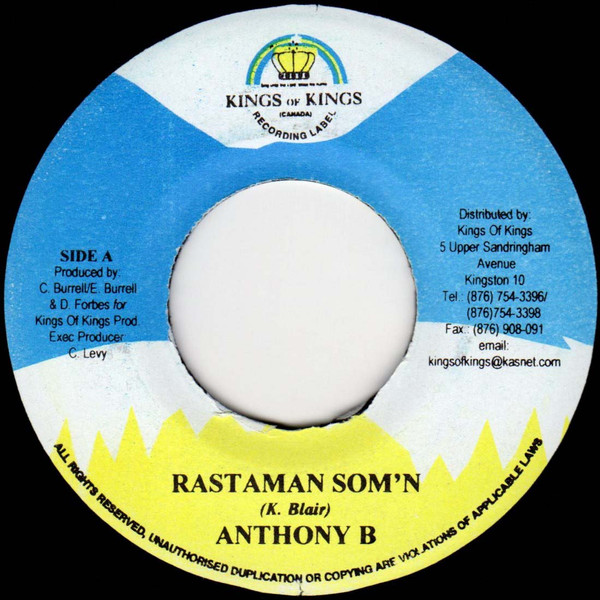
2002 / DISCOGS RELEASE DATE
Anthony B / Chrisinti / I Kay
Crown / blue & yellow label
Inspect the release reference ↗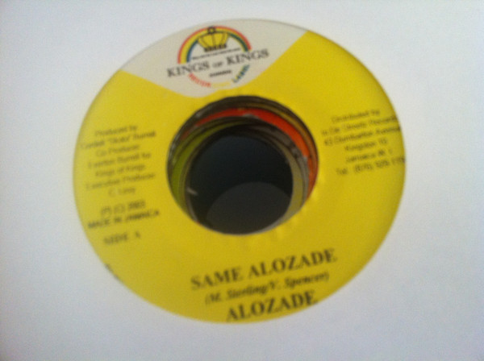
2003 / DISCOGS RELEASE DATE
Alozade / Spotlight
Crown / later pressing variant
Inspect the release reference ↗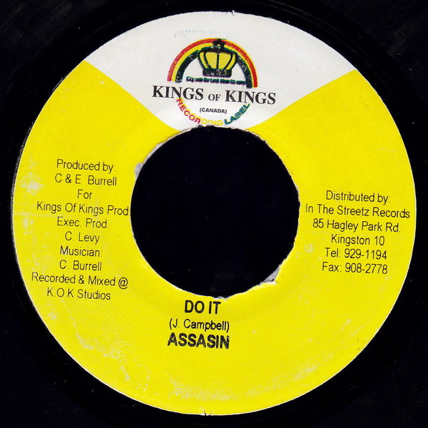
2004 / DISCOGS RELEASE DATE
Assassin / Briggy Benz & Red Square (2)
Crown / later pressing variant
Inspect the release reference ↗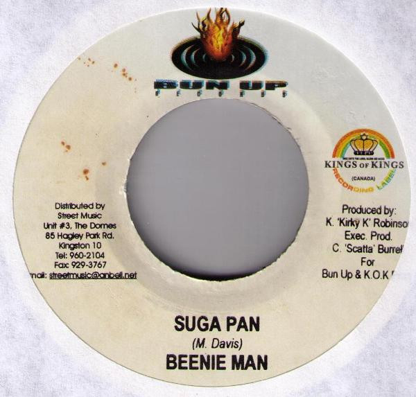
2005 / DISCOGS RELEASE DATE
Beenie Man / Hollow Point
Crown / later pressing variant
Inspect the release reference ↗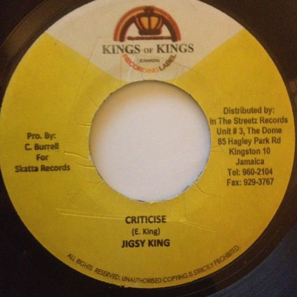
2009 / DISCOGS RELEASE DATE
Jigsy King / Gyptian
Crown / later pressing variant
Inspect the release reference ↗These are archival record photographs, preserved at the available source resolution. They are evidence of printed marks, not reconstructed vector logos. The sample documents design usage from 1995 to 2009; it does not establish an exclusive sequence or exact redesign dates.